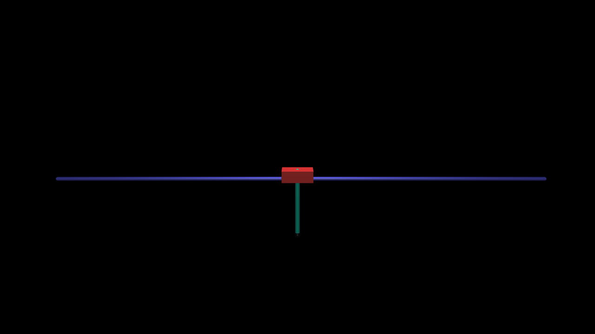
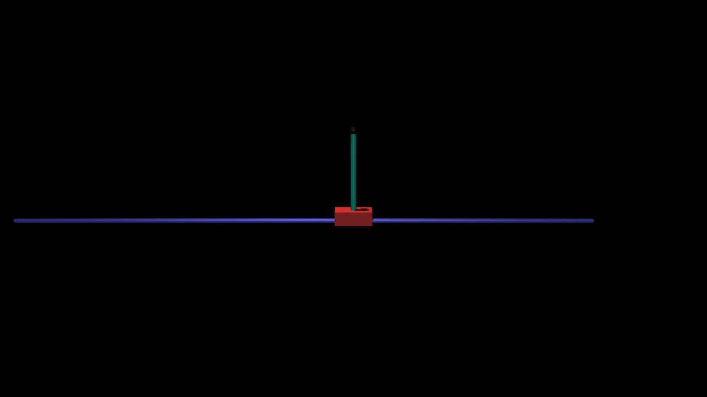
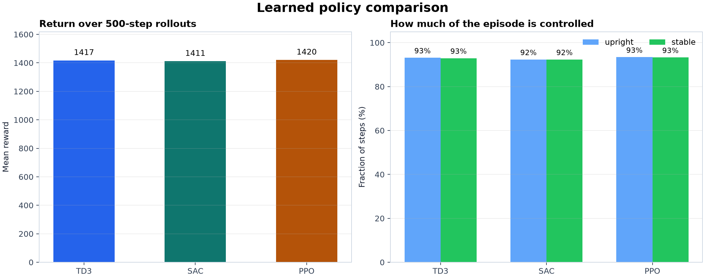
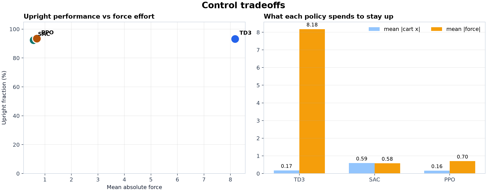
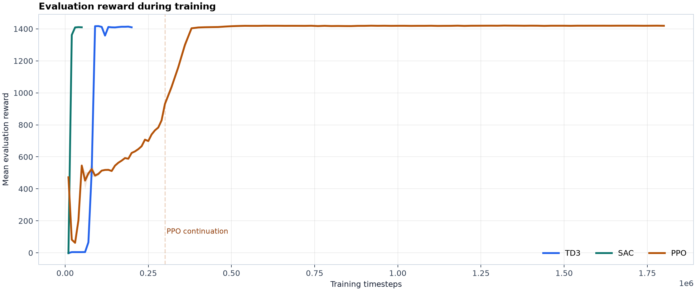
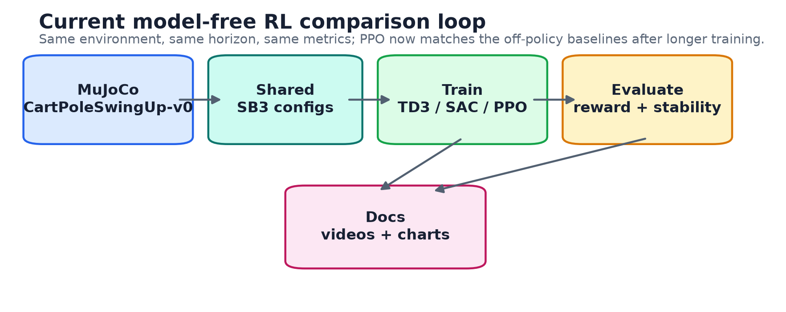
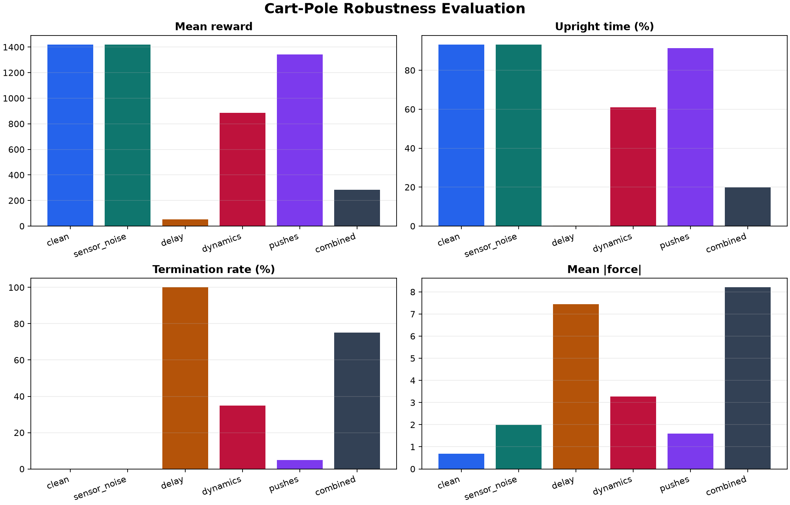

From MuJoCo swing-up to robotics RL foundations
This project is a focused learning track for robotics reinforcement learning using one controllable system: a MuJoCo cart-pole with normalized continuous force control. The current chapter is model-free state-based RL: a trained TD3 baseline is now compared against SAC and PPO. Next chapters should make the simulator robust, add camera observations, and prepare for real hardware.
Current State
The environment starts with the pole hanging downward. The controller must push the cart to build energy, swing the pole upright, then stabilize near the top.


Learned Policy Rollouts
These videos use the best checkpoint from each trained run, rendered from MuJoCo RGB frames with a deterministic policy and a 500-step episode horizon.
TD3
Best mean reward in this batch: 1417, with about 93% upright time.
SAC
Very close mean reward: 1411, with about 92% upright time and low action effort.
PPO
After a longer continuation, PPO reaches 1420 mean reward with about 93% upright time.
Algorithm Comparison Results
All three policies use the same custom environment, normalized continuous action, evaluation horizon, and metrics. The useful lesson is not just who wins; it is the tradeoff between return, stability, cart travel, and force use.
[-1, 1]. The simulator
maps that to physical cart effort with force = action * 10, so
mean |force| is the average push magnitude applied to the cart.




| Policy | Mean reward | Success | Upright | Stable | Mean |action| | Mean |force| | Mean |cart x| |
|---|---|---|---|---|---|---|---|
| TD3 | 1417.21 | 100% | 93.1% | 92.9% | 0.818 | 8.178 | 0.170 |
| SAC | 1411.16 | 100% | 92.3% | 92.3% | 0.058 | 0.576 | 0.590 |
| PPO | 1420.08 | 100% | 93.4% | 93.3% | 0.070 | 0.698 | 0.156 |
System Architecture
The active repo is intentionally small: one custom simulator, model-free baseline trainers, shared evaluation metrics, rendering tools, and timestamped artifacts. This keeps algorithm comparisons fair and repeatable.
What Model-Free Control Learns
Actor
The actor maps the current 5D state to one continuous action. In this
project, that action is normalized to [-1, 1] and then scaled
into cart force by the environment.
obs_t -> actor -> action_tCritics
TD3 trains two value estimators for the same state-action pair. SAC also uses critic networks, while PPO learns from batches of on-policy rollouts.
critic(obs_t, action_t) -> value estimateProgression So Far
Build the simulator and custom environment
Created CartPoleSwingUp-v0 in MuJoCo with normalized
continuous actions.
Remove unsuitable baselines
Dropped the discrete classic-control cart-pole and the upright-only MuJoCo inverted pendulum from the active path.
Train a TD3 swing-up policy
Trained a Stable-Baselines3 TD3 policy that performs swing-up and stabilization from the downward start.
Record the first learned behavior
Added a short MuJoCo video of the trained policy so progress is visible without opening a simulator window.
Scaffold algorithm comparison
Added TD3, SAC, and PPO configs, timestamped artifact folders, and one evaluator for reward, stability, cart travel, and action effort.
Train SAC and PPO
Ran the comparison baselines and evaluated all three policies under the same 500-step swing-up task.
Continue PPO to solve swing-up
Resumed the first PPO policy for longer training. The best checkpoint now matches the TD3/SAC swing-up behavior with low average force.
Document the comparison
Added rollout videos, reward charts, stability charts, and a comparison loop diagram to the project docs.
Add robust-sim evaluation
Added wrappers for noise, delay, dynamics randomization, and external pushes, plus a report command for testing clean-trained policies.
Fine-tune PPO for push recovery
Resumed the solved PPO checkpoint inside the pushes
scenario. The kept model reaches 95% success on pushed rollouts while
preserving clean swing-up.
Recommended Next Chapters
| Chapter | What to build | Why it matters |
|---|---|---|
| Algorithm comparison | Repeat TD3, SAC, and PPO across multiple seeds, then stress-test the best checkpoints. | Turns the comparison into evidence instead of one lucky or unlucky run. |
| Reward shaping | Try alternate reward terms for upright angle, cart centering, velocity, and action cost. | Teaches how robotics behavior changes when the objective changes. |
| Robust simulation | Run the new robust evaluator, then train policies with selected stressors enabled. | Shows which clean-trained controllers survive variation and which need robust training. |
| Visual RL | Add a MuJoCo camera observation and train a CNN policy from pixels. | Connects cart-pole to Atari-style image-based RL and future camera control. |
| Image plus state | Train a policy that receives both camera frames and encoder-like state. | Matches realistic robotics setups where cameras and sensors work together. |
| State-based sim2real | Use encoder observations first, with strict safety limits and a supervisor. | Gets onto hardware with the smallest risk before image-only policies. |
| VLA foundations | Study imitation learning, action chunking, diffusion policies, and small open VLA projects. | Builds toward modern robot-policy systems after the basics are solid. |
Robust Sim Before Hardware
The project now has a first robustness layer for pressure-testing trained policies before retraining or touching physical hardware. The real cart-pole will have noise, latency, imperfect calibration, friction, endstop constraints, and disturbances, so the simulator needs to expose those failure modes early.
Action and sensor noise
The sensor_noise and delay scenarios add
encoder-like noise, action noise, and delayed actions/observations.
Physical variation
The dynamics scenario randomizes cart mass, pole mass, joint
damping, friction loss, gravity, and force limit.
Disturbances
The pushes and combined scenarios inject cart and
pole velocity impulses during the rollout.
pushes, so the policy practices
recovering from cart and pole velocity impulses before any hardware work.

What this run taught
Training directly on pushes improved the disturbance case from the clean PPO's 75% success to 95% success over 20 evaluation episodes. Clean swing-up stayed solved, but delay, randomized dynamics, and combined stressors are still separate problems rather than solved sim2real transfer.
Disturbance rollouts
These videos use the same seed and the same pushes scenario. The
overlay flashes when the simulator injects a cart/pole velocity impulse.
Roadmap
Future Hardware Path
The real setup should come after the simulated controller is robust. Start with encoder state, not image-only control. Cameras become safer once the motor, endstop, homing, and watchdog behavior are reliable.
Cart sensing
Stepper position, pulley calibration, soft limits, and two endstops for homing.
Pole sensing
Rotary encoder angle and filtered angular velocity.
Control bridge
ROS 2 plus ros2_control to expose a safe action interface.
Runbook
Train TD3
uv run cartpole-robot-train --config configs/algorithms/td3.tomlTrain SAC or PPO
uv run cartpole-robot-train --config configs/algorithms/sac.toml
uv run cartpole-robot-train --config configs/algorithms/ppo.tomlEvaluate a policy
uv run cartpole-robot-eval \
--algo td3 \
--model artifacts/runs/td3/<run-id>/best/best_model.zipCompare reports
uv run cartpole-robot-compare \
artifacts/runs/td3/<run-id>/eval_metrics.json \
artifacts/runs/sac/<run-id>/eval_metrics.json \
artifacts/runs/ppo/<run-id>/eval_metrics.jsonRun robustness report
uv run cartpole-robot-robust-eval \
--algo ppo \
--model models/best/ppo_cartpole_swingup_best_20260629-010531.zipTrain push recovery
uv run cartpole-robot-train \
--config configs/algorithms/ppo_robust_pushes.toml \
--resume models/best/ppo_cartpole_swingup_best_20260629-010531.zipWatch a trained policy
uv run cartpole-robot-watch \
--algo ppo \
--model models/best/ppo_cartpole_swingup_robust_pushes_best_20260629-012559.zipRun a random rollout
uv run cartpole-robot --render --render-fps 25Open TensorBoard
uv run tensorboard --logdir artifacts/runs